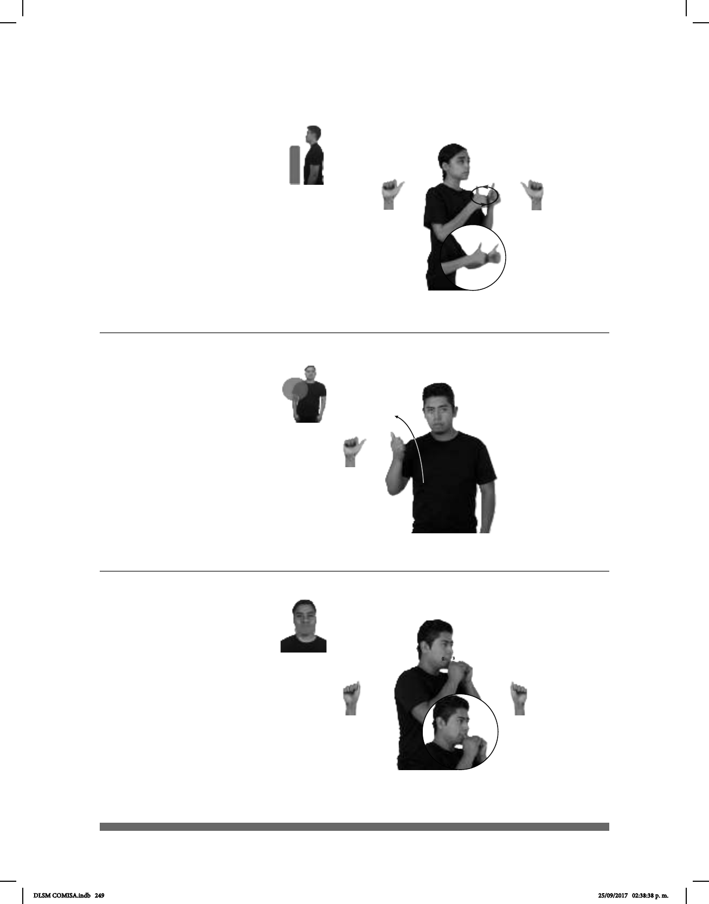

249
Aprovechar (A-50)
COMIDA GRATIS pro-YO YA APROVECHAR
Yo aproveché la comida gratuita.
(A-49)
UNO DENTRO APÓSTOLES, él-TRAICIONAR-a- JESÚS YA
(A-51)
LUGAR CHAPULTEPEC MUCHAS ARDILLA JUGUETÓN CL:2´
todas partes
En Chapultepec hay muchas ardillas juguetonas.
Seña: SB
MD y MB A.1
MD palma hacia la izquierda.
MB palma hacia la derecha.
A la altura del pecho. MD sobre
la muñeca de MB.
MD y MB siguen una
trayectoria de movimientos circulares hacia
el frente.
sust. m. Cada uno de los doce
discípulos de Jesucristo, escogidos por él
para predicar sus enseñanzas, más San Pablo
y San Bernabé.
La seña se usa en la
comunidad sorda mormona.
Seña: SM
A.1
Palma hacia la izquierda.
Del plexo al hombro.
La mano se mueve formando
un arco hacia arriba y hacia atrás.
hacerlo provechos o sacarle el máximo
rendimiento.
Generalmente se acompaña
de la emisión de un clic bilabial o lengua
vibratoria dependiendo de su contexto..
Seña: SS
A.5
Las palmas se encuentran
frente a frente.
Sobre la boca.
Cabeza
inclinada, boca abierta mostrando los
dientes.
Simula a una ardilla
comiendo.
sust. f. Roedor de cola
grande y peluda que vive en los árboles.
DLSM COMISA.indb 249 25/09/2017 02:38:38 p. m.